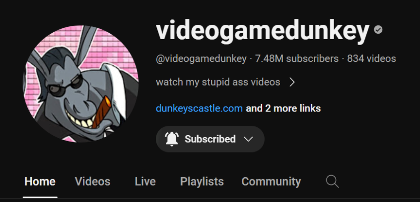

History
Jason Gastrow goes by many names online, but his most popular ones are, Videogamedunkey, Dunkey, and Jason. Jason has been publishing videos online since 2003. Initially, he created Flash animations that he uploaded on the website Newgrounds under the username "MeatwadSprite". Gastrow started his current YouTube channel, videogamedunkey, in 2010, with a video of him performing a speedrun of the 1991 game Battletoads. Gastrow recalled that the name "videogamedunkey" came about when he was playing Left 4 Dead with a friend.
Content
Gastrow primarily covers video games on his channel. This includes posting reviews, playthroughs, video essays, and montages. He has also reviewed films, such as The Shining. During his channel's initial years, Gastrow was primarily known for his coverage of the 2009 multiplayer online battle arena game League of Legends.
Network
Gastrow initially signed a contract with internet entertainment platform Machinima, Inc., which according to him took a large cut of his earnings from advertising. In 2013, Gastrow switched from Machinima to Maker Studios, which reportedly took more revenue than Machinima. Microsoft offered to pay if he made four videos for Xbox Live's Summer of Arcade. Shortly after Gastrow uploaded the first video, in which he lambasted the game he was playing, Microsoft took down the video and canceled the deal. Gastrow has since worked with, which he has praised.
History
Jason Gastrow goes by many names online, but his most popular ones are, Videogamedunkey, Dunkey, and Jason. Jason has been publishing videos online since 2003. Initially, he created Flash animations that he uploaded on the website Newgrounds under the username "MeatwadSprite". Gastrow started his current YouTube channel, videogamedunkey, in 2010, with a video of him performing a speedrun of the 1991 game Battletoads. Gastrow recalled that the name "videogamedunkey" came about when he was playing Left 4 Dead with a friend.
Content
Gastrow primarily covers video games on his channel. This includes posting reviews, playthroughs, video essays, and montages. He has also reviewed films, such as The Shining. During his channel's initial years, Gastrow was primarily known for his coverage of the 2009 multiplayer online battle arena game League of Legends.
Network
Gastrow initially signed a contract with internet entertainment platform Machinima, Inc., which according to him took a large cut of his earnings from advertising. In 2013, Gastrow switched from Machinima to Maker Studios, which reportedly took more revenue than Machinima. Microsoft offered to pay if he made four videos for Xbox Live's Summer of Arcade. Shortly after Gastrow uploaded the first video, in which he lambasted the game he was playing, Microsoft took down the video and canceled the deal. Gastrow has since worked with, which he has praised.
BigMode
In September 2022, Gastrow and his wife launched Bigmode, a video game publishing company specializing in publishing indie games. Gastrow stated in a video announcing the new company, "I think we're going to bring insane value to the table and the bottom line is: help good games succeed and help them continue to succeed into the future". Co-founder Leah Gastrow said their ultimate goal was to "put together a catalogue of unique, high-quality games that can be enjoyed for many years." While there was some criticism by gaming journalists, the announcement was well received by indie developers. In January 2023, Bigmode announced its first title, Animal Well.